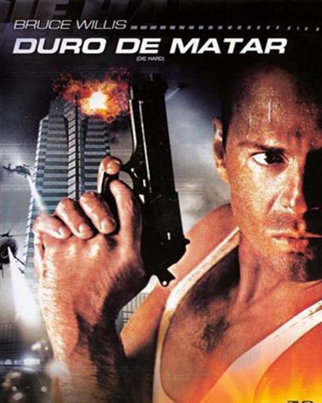

ACCIÓN VINTAGE
Reviviendo los clásicos
Hoy nos sumergiremos en el emocionante mundo de las películas de acción. Es probable que hayamos disfrutado de muchas de ellas en algún momento, aunque algunas podrían haberse desvanecido en el recuerdo. Las películas que vamos a explorar sin duda han dejado una huella indeleble en la historia de este género cinematográfico, ya sea debido a su cautivadora trama o a las interpretaciones de sus actores. Sin embargo, antes de adentrarnos en los detalles, echemos un vistazo a un breve resumen de su trasfondo histórico.
Historia
Las películas de acción son un género cinematográfico que se caracteriza por presentar escenas emocionantes, intensas y espectaculares, generalmente con protagonistas enfrentando desafíos físicos, enfrentamientos violentos y situaciones de riesgo. Estas películas suelen destacar por sus secuencias de persecuciones, combates, explosiones y efectos especiales impactantes.
La historia de las películas de acción se remonta a los primeros días del cine, con películas mudas como "The Great Train Robbery" (1903) considerada una de las primeras películas de acción. Durante las décadas siguientes, el género se desarrolló con películas como las protagonizadas por héroes de aventuras como Errol Flynn en la década de 1930.
Sin embargo, fue en las décadas de 1970 y 1980 cuando el género de acción realmente despegó, gracias a películas como "Duro de Matar" (1988), "Terminator" (1984) y "Arma Mortal" (1987). Estas películas establecieron arquetipos y tropos que se convirtieron en elementos clave del género.
En las décadas posteriores, las películas de acción continuaron evolucionando con la incorporación de tecnología CGI y efectos visuales avanzados, lo que permitió la creación de secuencias aún más espectaculares. Además de las escenas de acción, las películas comenzaron a explorar temas más complejos y personajes más matizados dentro del género.
En resumen, las películas de acción son una parte importante de la historia del cine, destacando por sus emocionantes secuencias y personajes inolvidables. Han evolucionado desde sus comienzos en el cine mudo hasta convertirse en un género icónico y diverso en la actualidad.
Películas
A contiuación veremos un top 10 de películas clásicas que indudablemente han dejado una huella en la historia del cine.
Duro de Matar
Se trata de una serie de películas que siguen al intrépido policía John McClane mientras se enfrenta a situaciones de peligro extremo. A lo largo de las películas, McClane se convierte en un icónico héroe de acción. Cada película lo coloca en diferentes escenarios, desde un rascacielos hasta un aeropuerto y una ciudad. La franquicia se destaca por su acción emocionante y las hazañas valientes de McClane mientras lucha contra villanos y desafíos mortales.
El Perfecto Asesino
La película sigue a Léon, un asesino a sueldo solitario y hábil, y Mathilda, una joven en busca de venganza después de que su familia es asesinada. Léon se convierte en su protector y mentor, enseñándole las habilidades letales del oficio. La película explora la relación única entre estos dos personajes mientras enfrentan amenazas y desafíos. Acción intensa y emotiva caracterizan esta película dirigida por Luc Besson.
Matrix
Presenta un mundo en el que los humanos viven en una realidad simulada por máquinas mientras sus mentes están conectadas a un sistema artificial. Neo, un programador de computadoras, descubre la verdad y se une a la resistencia liderada por Morpheus para liberar a la humanidad. La trilogía explora la lucha entre humanos y máquinas, fusionando acción alucinante con conceptos filosóficos sobre la realidad y la libertad. Las películas destacan por sus efectos visuales revolucionarios y su narrativa intrigante.
León Peleador Sin Ley
La trata sigue a un soldado de la Legión Extranjera que abandona su puesto para regresar a los Estados Unidos cuando se entera de que su hermano está gravemente herido. Para ayudar a su familia, Lyon se une al mundo subterráneo de las peleas clandestinas. La película sigue su camino hacia la competición y la redención mientras lucha en los ring y enfrenta desafíos personales. La película combina la acción característica de Van Damme con un enfoque emocional en la familia y la superación personal.
El Gran Maestro
El Gran Maestro" (también conocida como "The Grandmaster") es una película de artes marciales dirigida por Wong Kar-wai. La película sigue la vida de Ip Man, un maestro de artes marciales que se convierte en el mentor del famoso Bruce Lee. Ambientada en la China de los años 30 y 40, la película muestra la influencia de Ip Man en el mundo de las artes marciales y su lucha contra otros maestros. La película combina secuencias de lucha impresionantes con elementos dramáticos y una estética visual distintiva. "El Gran Maestro" destaca por su enfoque en la historia y la evolución de las artes marciales, así como por su elegante dirección.
Arma Mortal
Se trata de una serie de películas de acción que sigue las aventuras de dos detectives de Los Ángeles, Martin Riggs (Mel Gibson) y Roger Murtaugh (Danny Glover). A medida que luchan contra el crimen en la ciudad, enfrentan situaciones peligrosas y emocionantes. La franquicia se destaca por su equilibrio entre acción intensa y camaradería cómica entre los personajes principales. A lo largo de varias entregas, la saga desarrolla sus personajes y presenta desafíos cada vez más grandes. Con secuelas que añaden nuevos giros y personajes, "Arma Mortal" se ha convertido en una franquicia querida y exitosa dentro del género de acción.
Terminator

La trama gira en torno a Skynet, una red de inteligencia artificial que se vuelve consciente y lanza un intento de exterminio humano a través de robots asesinos conocidos como Terminators. La clave de la resistencia humana es John Connor, un líder destinado a detener la dominación de Skynet. Las películas exploran el viaje de Connor y otros personajes mientras luchan contra Terminators y se enfrentan a viajes en el tiempo. A lo largo de las entregas, la saga ha abordado temas de tecnología, destino y supervivencia humana.
Rambo
Estás películas siguen las hazañas de John Rambo, un ex boina verde y veterano de guerra. Las películas presentan a Rambo luchando contra enemigos y situaciones peligrosas en diferentes contextos. Comenzando con "First Blood" (1982), la primera película lo muestra como un veterano que se enfrenta a la injusticia de una pequeña ciudad. Las secuelas, como "Rambo: First Blood Part II" (1985), lo llevan en misiones de rescate y combate en el extranjero. La saga destaca por su acción intensa y temas de trauma de guerra, mientras que Rambo se convierte en un símbolo de resistencia y lucha.
La bestia
Danny the Dog (también conocida como Unleashed y Desencadenado o La bestia en español) es una película perteneciente al género de acción estrenada en 2005, dirigida por Louis Leterrier y protagonizada por el actor Jet Li, en la que es esclavizado por un usurero y se convierte en un violento luchador que escapa y conoce a un ciego quién le enseña sobre humanidad. El rodaje de la película se llevó a cabo en Glasgow (Escocia).
Police Story
Es una película de acción y comedia protagonizada por Jackie Chan en el papel del detective de la policía de Hong Kong, Chan Ka Kui. La trama sigue a Chan mientras se enfrenta a una peligrosa banda de criminales y se involucra en situaciones de alto riesgo para proteger a una testigo clave. La película es conocida por sus emocionantes secuencias de lucha y acrobacias, así como por la característica combinación de acción y humor de Jackie Chan. "Police Story" se ha convertido en una película icónica de la filmografía de Jackie Chan y ha dado lugar a varias secuelas que exploran más aventuras del detective Chan.